Triple integrals
| > |
restart; with(student): with(plots): |
Warning, the name changecoords has been redefined
A triple integral is easily done with the Tripleint function from the student package.
| > |
V:= Tripleint(x^3*exp(y)*sin(z), x=0..2, z=-Pi..2*Pi, y=0..1 ); |
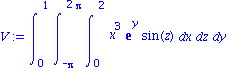
The hard part is setting up an integral. Maple can help with pictures. For instance, suppose you are asked to evaluate
| > |
V:= Tripleint( 12*x*z*exp(z*y^2), y=x^2..1, x=0..1, z=0..1 ); |
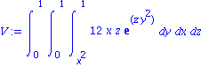
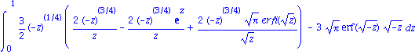
Maple can't finish this integral in the order you gave. We can look at all the boundaries of the region:
| > |
implicitplot3d( {y=x^2,y=1, x=0,x=1, z=0,z=1}, x=0..1, y=0..1, z=0..1, style=wireframe, color=black, axes=boxed); |
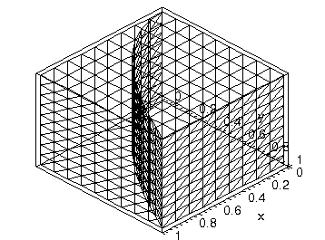
The "pie wedge" is the correct region. If we do the x variable first, it's no problem:
| > |
Tripleint( 12*x*z*exp(z*y^2), x=0..sqrt(y), y=0..1, z=0..1 ); |
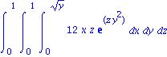
Cylindrical coordinates
| > |
setoptions3d( style=wireframe, axes=boxed ); |
Example: Find the centroid of the region bounded by the paraboloid z=r^2, the cylinder r=1, and the plane z=0.
| > |
implicitplot3d( {z=r^2,r=1}, r=0..1.1, theta=0..2*Pi, z=0..1, coords=cylindrical, grid=[16,16,16] ); |
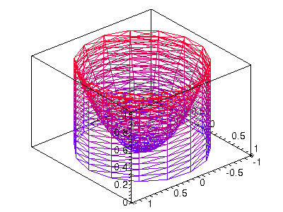
The region of integration is the one underneath the "bowl" but inside the cylinder.
| > |
M:= Tripleint( r, z=0..r^2, r=0..1, theta=0..2*Pi ); |
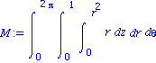
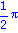
| > |
xbar:= (1/value(M)) * Tripleint( r*cos(theta)*r, z=0..r^2, r=0..1, theta=0..2*Pi ); |
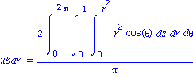
| > |
ybar:= (1/value(M)) * Tripleint( r*sin(theta)*r, z=0..r^2, r=0..1, theta=0..2*Pi ); |
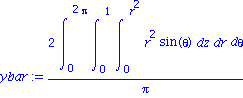
| > |
zbar:= (1/value(M)) * Tripleint( z*r, z=0..r^2, r=0..1, theta=0..2*Pi ); |
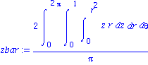
| > |
value( [xbar,ybar,zbar] ); |
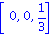
The centroid is on the axis of symmetry. (It is also outside the region.)
Spherical coordinates
Example: Find the volume of the region between a cone and a sphere:
| > |
p1:= implicitplot3d( phi=Pi/6, rho=0..2, theta=0..2*Pi, phi=0..Pi/6, coords=spherical, style=patch, grid=[20,20,20] ):
p2:= implicitplot3d( rho=2, rho=0..2.01, theta=0..2*Pi, phi=0..Pi/2.5, coords=spherical, color=gray, style=wireframe, grid=[16,16,16] ):
display( p1, p2 , scaling=constrained); |
![[Plot]](images/TripleIntegrals_15.gif)
This volume is very easy in spherical coordinates.
| > |
V:= Tripleint( rho^2*sin(phi), rho=0..2, theta=0..2*Pi, phi=0..Pi/6 ); |
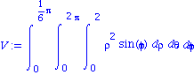
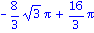